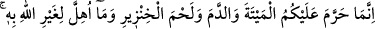
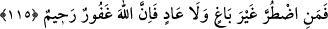
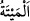
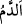

halkı! Allah’ın nimetlerine nankörlük edenlerin, peygamberlerini yalanlayanların ve bu
yüzden önce ve sonra başlarına gelen musibetler artık sizin tarafınızdan açıkça belli
olmuştur. Onların başına gelenlerin sizin de başınıza gelmemesi için yapmakta
olduğunuz küfran-ı nimet ve Allah Rasulü (s.a.)’i yalanlamaktan vazgeçin. Allah’ın
nimetlerinin kadrini hakkıyla bilin; emir ve yasaklarında Allah Rasûlü (s.a.)’e itaat
edin. Allah’ın size rızık olarak verdiği ekin, hayvan ve diğer nimetlerden helal ve temiz
olarak yiyin. Yani nefislerinize hoş gelen leziz yiyecekleri yiyin. Bahîra ve benzeri
hayvanların haram olduğunu uydurmaktan vazgeçin.
Âyette şeriat nurlarının ve hakikat sırlarının sâdık bir âşık için mânevi rızık olduğuna
işâret vardır. Şeriatın ve hakîkatin kabul ettiği şeyler helal ve tayyibdir. Reddettiği
şeyler ise haram ve habistir. Bu sebeple şöyle denilmiştir:
Dînî ilimler: Fıkıh, tefsir ve hadistir
Din adına başkasını okumak hiçtir.
Yâni faydalı ve makbul olan ilimler bu ilimler ile onların zâhirde ve bâtında kabulle
karşıladığı ilimlerdir.
“eğer (gerçekten) yalnız Allah’a ibadet ediyorsanız,” Allah’ın helal saydıklarını
helal sayarak, haram saydıklarını da haram sayarak ona itaat edip rızasını arıyorsanız
“O’nun nimetine şükredin.” Onların hakkını tanıyın ve onlara nankörlükle karşılık
vermeyin. İnsanın mânen fânî olması da şükür emrine dahildir. “Yiyin!” emrinden sonra
gelmesi, yemenin şükre sebep olmasından dolayıdır. Sanki şöyle denilmiştir: “Helal ve
temiz olarak yedikten sonra Allah’ın nimetine şükredin.”
115. (Allah) size, sadece ölü hayvanı, kanı, domuz etini ve Allah’tan başkası
adına kesilen hayvanı haram kıldı. Ancak kim mecbur kalırsa (başkalarının
haklarına) saldırmaksızın, sınırı da aşmadan (bunlardan yiyebilir). Çünkü Allah
çok bağışlayan, pek esirgeyendir.
“(Allah) size, sadece ölü hayvanı, kanı, domuz etini ve Allah’tan başkası adına
kesilen hayvanı” yemeyi “haram kıldı.”
“__WORD__el-Meyte”, boğazlanmadan ölen murdar hayvandır. Dış ülkelerden getirilen
kurutulmuş etler haramdır. Çünkü onlar sığırları Allah’ın ismini anmadan başlarına
çengel vurarak keserler.
“__WORD__ed-Dem”, damardan akan kan demektir. Kesim sırasında ete karışan kan ise
affedilmiştir. Ancak onun da su ile temizlenmesi evladır.
Allah’tan başkası adına anılarak kesilen hayvanlar, putlar adına bağırılarak kesilen